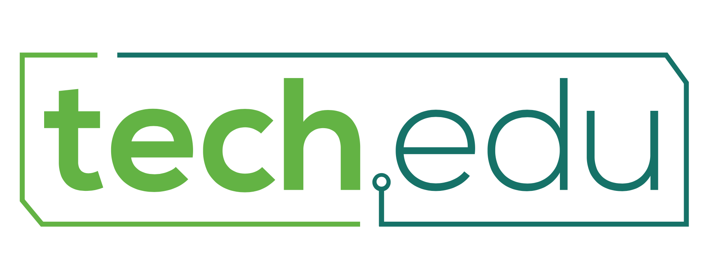

-

Objetivos
-
O TechEdu é um projeto que tem o objetivo de formar Agentes de Transformação oferecendo ferramentas tecnológicas como Programação e Eletrônica junto a noções básicas de Empreendedorismo e Design Thinking para jovens do Ensino Médio, através de um set de workshops e atividades práticas.
Como foi feito
-
Oferecemos Workshops de Programação, Eletrônica, Empreendedorismo e Design Thinking. Neles são apresentados alguns conceitos desses assuntos e os alunos são instigados a desenvolver um projeto de intervenção usando os conceitos aprendidos. São fornecidas apostilas que auxiliam os alunos durante os Workshops. Alguns voluntários do TechEdu podem mentorar grupos durante o desenvolvimento do projeto, que pode durar até 6 meses.
Reportagem do TechEdu no G1
Aprendizados
-
A gente aprende a lidar com crianças que recebem diferentes tipos de educação, nos instigando a cada vez mais procurar maneiras diferentes de ensinar para que todos consigam acompanhar. Saber selecionar as ideias e guiar o grupo é uma dificuldade encontrada, pois queremos que eles possam ir atrás e aprender, aumentando a restrição do que podem ou não desenvolver. É muito gratificante poder ensinar e ajudar esses alunos, saber que você está influenciando em suas vidas e os ajudando a se tornarem agentes de transformação.